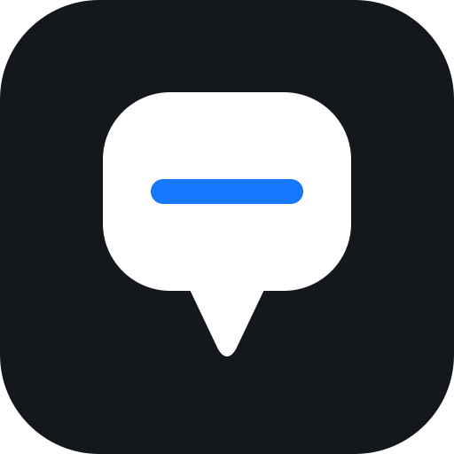
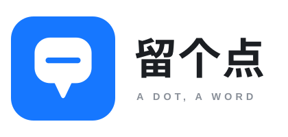
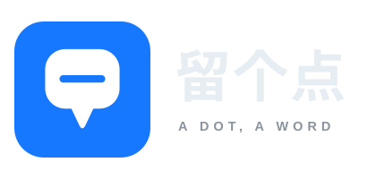

第一版是「一条线 + 一个点」的线条稿；这一版反过来——实心、双色、不描边、不用渐变，把产品的动作直接画出来：留下一句话，钉在这个点上。
不是名词，是一句随口说的话——像朋友告诉你「那家店不错，留个点」。
| 项 | 内容 |
|---|---|
| 中文名 | 留个点 |
| 英文 | A DOT, A WORD |
| 一句话 | 留个点，说句话。 |
| 语感 | 口语、轻、像自己对自己说话；不端着，不像工具软件 |
这一版不玩线条，用「实心色块 + 一句话」直说产品在干什么。
收藏地点这件事，最后落脚的其实是你写的那句话。所以主体不是地图，而是一个装着话的气泡。
尾巴放在正下方、收成一个尖，既像气泡的出口，也像地图针扎下去的那一戳——一个形状读两种意思，不额外加元素。
只有一条线，不写满：备注本来就是一句话、半句话，不是文章。线用圆头，收得干净。
和第一版的细线条正相反：粗、实、只在蓝白之间切换。缩到 16px 不掉细节，印在贴纸上也够分量。
图标画布 512 × 512，两个色块：底板、气泡（含尾巴）；气泡里挖掉一道横线。
| 元素 | 参数 |
|---|---|
| 底板 | rect 512 × 512，圆角 rx = 112（= 边长 21.875%） |
| 气泡 | rect x116 y104 w280 h224，圆角 rx 76，fill:#fff |
| 尾巴 | M208 314 L246 394 Q256 410 266 394 L304 314 Z，圆角靠 Q 收尖；根部藏进气泡底边 |
| 横线 | M184 216 H328 · stroke-width:28 · linecap:round · 颜色 = 底板色（挖空） |
| 配色 | 只有两色：底板 #1677ff、气泡 #ffffff，无渐变、无描边、无投影 |
同一个形状，三种底色：蓝底（主用）、墨底（深色场景）、浅底（浅色页面）。
底 #1677ff 气泡 #ffffff
横线 = 底蓝色（挖空）

墨底版 · logo-icon-ink.svg底 #14181d 气泡 #ffffff
深色页面或深色桌面壁纸
底 #f5f6f7 气泡 #1677ff
横线 = 白色（挖空）
没有细线，只有块面，小尺寸最稳
420 × 200 画布。蓝色方块 152 × 152（rx 33），图标按 0.296875 倍缩放。


| 元素 | 参数 |
|---|---|
| 中文「留个点」 | x196 y108 · 字号 62 · 字重 700 · 字距 2字体 PingFang SC → Hiragino Sans GB → Microsoft YaHei |
| 英文「A DOT, A WORD」 | x199 y146 · 字号 14.5 · 字重 600 · 字距 5字体 Helvetica Neue → Arial |
| 文字颜色 | 浅底版：中文 #1c1f23 / 英文 #8a9099深底版：中文 #e6edf3 / 英文 #8b949e |
| 蓝色方块 | x16 y24 · 152 × 152 · rx 33，fill:#1677ff |
比第一版更省：主色只有一个蓝，其余全是中性色。
最小 16 × 16；圆角随尺寸等比缩放，四周留白 ≥ 边长 1/8。
圆角 = 边长 × 0.219logo-icon.svg（自带蓝底，任何背景上都成立）logo-icon-ink.svg，浅色页面用 logo-icon-light.svg| 第一版 · 点记 | 第二版 · 留个点 | |
|---|---|---|
| 画法 | 一条折线 + 一个点，细线条 | 实心气泡 + 一道横线，块面 |
| 气质 | 克制、安静、像手绘本子 | 直接、轻快、更像一个 App |
| 16px 表现 | 靠线条，缩到极小会变细 | 靠块面，小尺寸最稳 |
| 含义 | 地图 + 你标下的那个点 | 地点 + 你写的那句话 |
| 更适合 | 放在页面里当安静的小标记 | 当桌面图标、顶栏品牌位、发出去让人记住 |
两版都用同一个主蓝 #1677ff，可以只选其一，不会和页面主题打架。
v0.7.5 起已采用本版，改动如下：
web/assets/img/logo.svg：本版蓝底图标的页面副本（favicon 与顶栏共用）web/index.html：页面标题「留个点 · 地点笔记」、theme-color #1677ff、rel="icon" 指向 assets/img/logo.svgweb/index.html 顶栏：搜索框左侧品牌位，46 × 46（.mn-brand）web/admin.html：标题「留个点 · 同步」，页头 h1 加 24px 小图标改图标时记得同步 web/assets/img/logo.svg 与本目录三张 SVG。